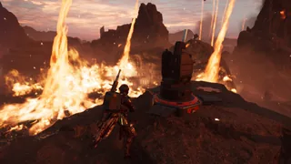

火焰 Tornados
“
火焰 Tornados – 行星 is ravaged by deadly 火焰 tornados.
— 星系战争地图
烈焰龙卷 are an environmental 条件 that create occasional storms of 火焰 Tornados on Scorched Moor planets. which move slowly and (semi)randomly throughout the play area. An active 火焰 龙卷风 storm will activate the 极暑 environmental 条件 for its 持续时间, after which the 条件 will deactivate.
概述

When spawned, each 火焰 龙卷风 will move around the map similar to an enemy patrol, with slightly more randomization. Wherever the 火焰 龙卷风 goes, it will leave an immolating (30-meters long, 10-meters wide) trail of flames with the immolation-lifetime of 30-秒. 联络 with the 火焰 龙卷风 or it's flame trail will result in any living entity making 联络 to be lit on 火焰; 建筑-entities such as A/MLS-4X 火箭哨戒炮 won't get immolated but will suffer and won't survive the base-火焰-伤害 without 生命值 升级 from 高级建造. Immolated 绝地潜兵 can extinguish themselves by performing a dive.
While 火焰 Tornadoes are active on the map, the 极暑 environmental 条件 will be active as well.
While most certainly very deadly and 破坏性 to 绝地潜兵 and their 战略配备, the 火焰 龙卷风 itself lacks 爆破 force, leaving structures in their pristine conditions (E.G. fences). In fact, 火焰 Tornados 通常 tend to avoid non-SEAF structures to begin with (E.G. 尖啸虫巢穴们）。[引用 needed They move randomly...]
应对 火焰 Tornadoes
- 火焰 Tornadoes can go anywhere an enemy NOT chasing after a 绝地潜兵 can walk. Climbing on a rocky cliff should keep a player safe from said tornadoes.
- This can best be seen within Cities. As patrols tend to stick to the roads, so will the 火焰 Tornadoes. 绝地潜兵 will find themselves to be safe on the buildings.
- Should a 绝地潜兵 be unable to avoid the trail of flames, they should quickly dive to extinguish themselves.
琐事
- The name for the in-game 效果 使用次数 Tornados, the less common plural spelling of 龙卷风. This spelling originates from Spanish and has always been less popular than Tornadoes.
变更历史
1.003.002
2025-05-20
Undocumented fix
- Fixed the displacement issue of the 火焰 Tornados trails. The trails are now once more properly anchored to tornados itself rather than being invisible and immolating unsuspecting victims located other side of the map while the visually observed trails were only a visual nuisance.
1.001.201
2024-10-29
Changes
- 轻型 intensity slightly 已降低 during the 火焰 龙卷风 天气 效果.
1.001.100
2024-09-17
Changes
- Arid planets (similar to the Hellmire 行星) will now only have the 极暑 修正 active during 火焰 龙卷风 storms.
1.000.400
2024-06-13
Changes
- 火焰 tornados have had their 行为 已更改, they should no longer feel like they actively 回应 to player movement, and should move more randomly.
- While a 火焰 龙卷风 storm takes place, enemy vision is 已降低. Player vision is unaffected.
1.000.103
2024-03-20
Changes
- Now spawns less 频繁 during missions.